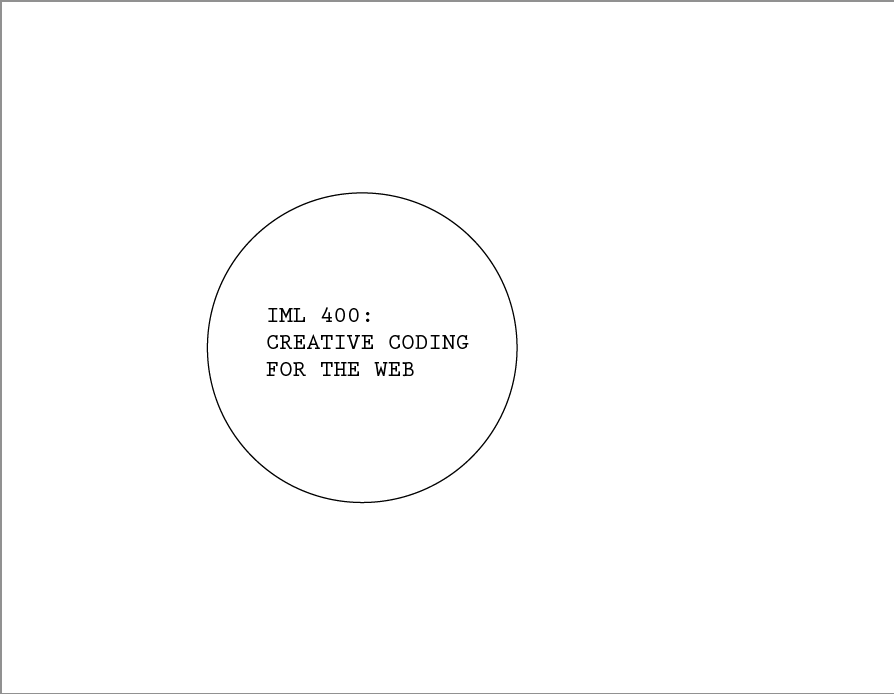
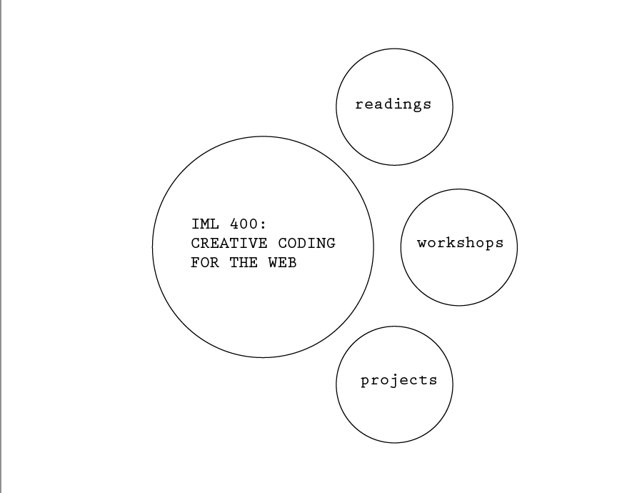
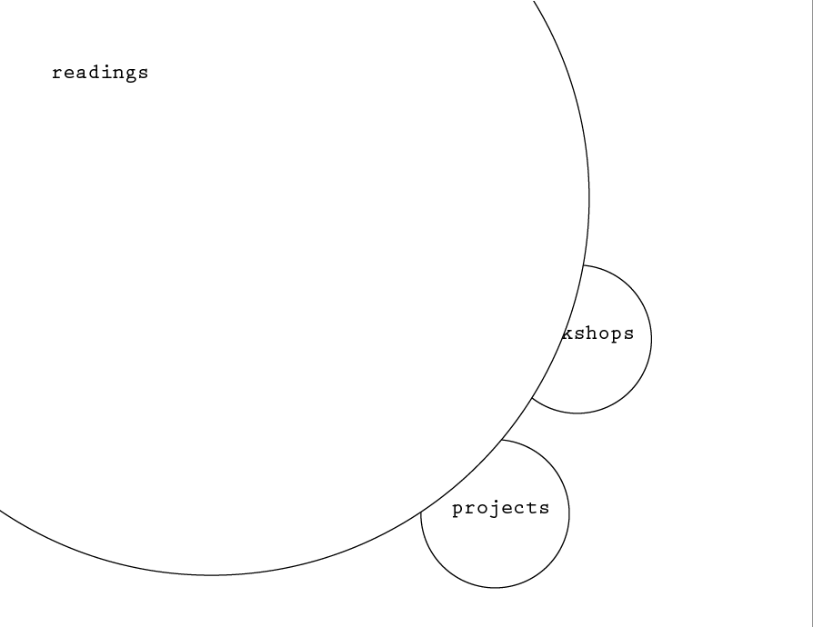
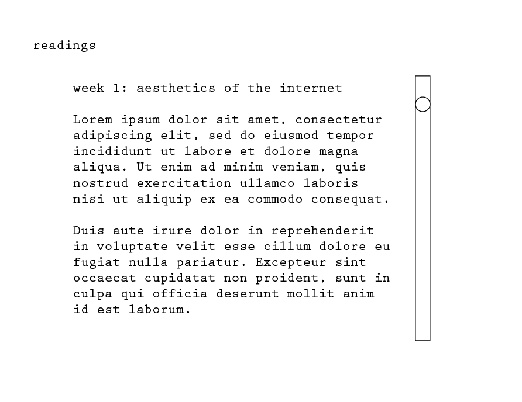

UX Wireframe Rebrand
Audience:
Not sure why anyone outside this class would be viewing this page...I can see how it could be a good portfolio piece, but as I’m not looking to get into coding, I don’t think it’s a body of work I’ll be trying to show off in the future… nonetheless, I’d like it to function as a portfolio/archive of my work in class that someone outside of our class would still be able to understand.
Concept:
Landing page is minimal--a plain background with a circular design the middle. When moused over, a train of smaller circles (each representing a sub category--readings, workshops, projects) emerges from behind the large circle and circles around it, coming to a stop.
The smaller circles, when clicked, will expand to fill the screen with their background color, the title sliding into place in the top left, and then the content on that page will fade in.




As for color palette, I’m thinking of using one that is mostly black and white, with accent colors of deep green and a light gold/beige. I have created a palette with these colors and used it in a few other personal projects, finding myself drawn back to it again and again because of its ability to convey a sense of clean minimalism as well as a comfort in the organic; the green and gold provide a warm sense of growth and nature while the black and white base keeps things rooted in simplicity.
With this dynamic, geometric design and two-sided color palette, I envision a site that is playful and inviting but also mature and intentional.